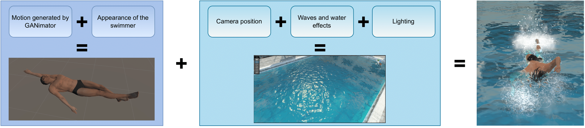

Abstract
Technologies play an increasingly important role in sports and become a real competitive advantage for the athletes who benefit from it. Among them, the use of motion capture is developing in various sports to optimize sporting gestures. Unfortunately, traditional motion capture systems are expensive and constraining. Recently developed computer vision-based approaches also struggle in certain sports, like swimming, due to the aquatic environment. One of the reasons for the gap in performance is the lack of labeled datasets with swimming videos. In an attempt to address this issue, we introduce SwimXYZ, a synthetic dataset of swimming motions and videos. SwimXYZ contains 3.4 million frames annotated with ground truth 2D and 3D joints, as well as 240 sequences of swimming motions in the SMPL parameters format. In addition to making this dataset publicly available, we present use cases for SwimXYZ in swimming stroke clustering and 2D pose estimation.
Pipeline for generating videos
|  |
We first generate a unique motion using GANimator trained on a clean swimming motion , and re-target it on a human body model. We then create an environment by choosing parameters such as camera view, water effects, and lighting. We obtain the final animation by putting the swimmer in the virtual swimming pool.
Sample videos
SwimXYZ is a synthetic dataset specialized in swimming, with synthetic monocular videos annotated with ground truth 2D and 3D joints. SwimXYZ consists of 11520 videos for a total of 3.4 million frames with variations in camera angle, subject and water appearances, lighting, and motion.
2D pose estimation
We use SwimXYZ for finetuning ViTPose, the state-of-the- art model for 2D human pose estimation. Qualitative evaluation is performed on images collected on the web.
 |
Download links
Here are the links to download the dataset. Note that downloading might take some time,
the total size of the dataset is about 300G. For each swimming stroke, the part1 contains
videos for the front and aerial views, while part2 features the side views.
Annotations and swimming motions in the SMPL format
Backstroke videos (part1)
Backstroke videos (part2)
Breastroke videos (part1)
Breastroke videos (part2)
Butterfly videos (part1)
Butterfly videos (part2)
Freestyle videos (part1)
Freestyle videos (part2)
BibTeX
@inproceedings{Fiche23SwimXYZ,
author = {Fiche, Guénolé and Sevestre, Vincent and Gonzalez-Barral, Camila and Leglaive, Simon},
title = {SwimXYZ: A large-scale dataset of synthetic swimming motions and videos},
journal = {ACM SIGGRAPH Conference on Motion, Interaction and Games (MIG)},
year = {2023}
}